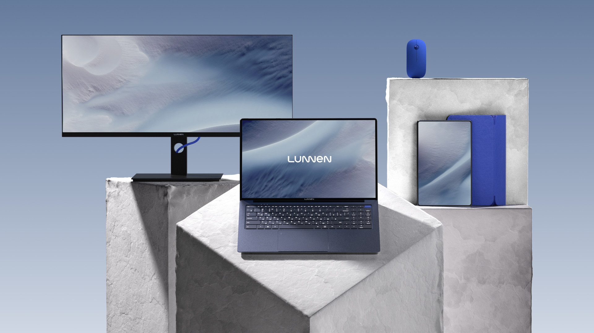
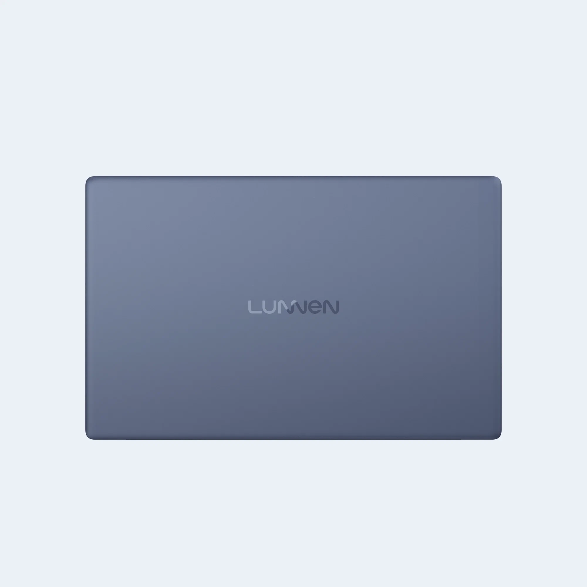
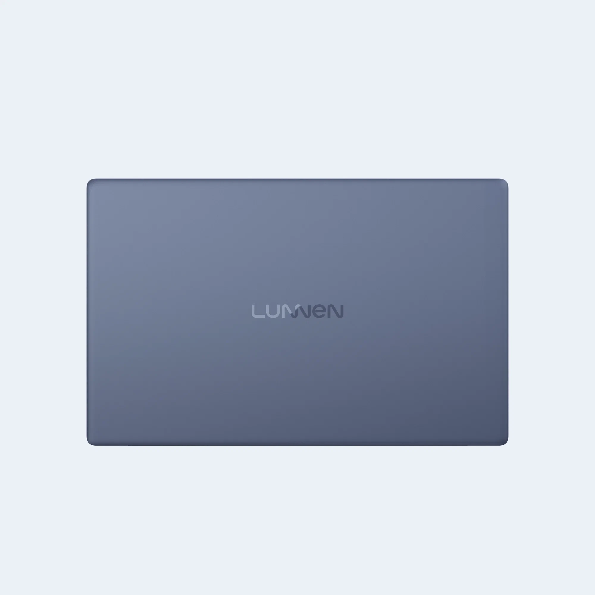

«Яндекс Маркет» представил бренд компьютерной техники Lunnen
Сейчас в ассортименте бренда есть две модели ноутбуков из линейки Ground.
«Яндекс Маркет» продолжает развивать сеть собственных брендов. Новый лэйбл Lunnen посвящён компьютерной технике.
Ведущие зарубежные издания и технологические блогеры опубликовали обзоры видеокарты GeForce RTX 4070 Super, которую компания NVIDIA представила 8 января. Выбрали главное.
В серию войдут ноутбуки, настольные компьютеры, планшеты, мониторы, проекторы, принтеры и другие устройства. Сейчас Lunnen предлагает два ноутбука линейки Ground:
| Lunnen Ground 15 | Lunnen Ground 16 | |
|---|---|---|
| Габариты | 359,5×233,5×18,6 мм, 1,7 кг | 366,8×233,7×17,8 мм, 1,8 кг |
| Дисплей | 15,6", 1920×1080, IPS, матовый, 60 Гц | 16", 1920×1080, IPS, матовый, 60 Гц |
| Процессор | 6-ядерный AMD Ryzen 5 5500U, 2,1 ГГц | 8-ядерный AMD Ryzen 7 5800U, 1,9 ГГц |
| Память | 16 ГБ оперативной DDR4, 512 ГБ постоянной SSD | |
| Батарея | 7 часов автономной работы | |
| ОС | Windows 11 Home | |
| Связь | Wi-Fi 802.11ac, Bluetooth | |
| Порты | USB-A 2.0, USB-A 3.2 (2 шт), USB-C 3.2, HDMI, аудиоджек | |
| Цвета корпуса | Silver Sea, Mid Gray | Indigo Sea, Light Gray |
Lunnen Ground 15 и Ground 16 продаются на «Яндекс Маркете» за 42 490 и 47 490 рублей соответственно (без учёта скидки по карте «Яндекс Пэй»).
Lunnen Ground 15
Lunnen Ground 16
.webp) 

«Яндекс» занимается разработкой дизайна, выбором комплектующих и тестированием устройств бренда Lunnen. Компания также планирует разрабатывать собственное программное обеспечение для некоторых моделей.
«Мы запустили новый бренд, чтобы предложить людям широкий выбор компьютерной техники по доступным ценам. Товары Lunnen рассчитаны на массового покупателя и помогают решать повседневные задачи — от создания рабочей презентации до воспроизведения фильмов», — Мария Бриш, креативный директор собственных брендов «Яндекс Маркета»
«Яндекс Маркет» уже запустил несколько брендов: Tuvio (бытовая техника), COMMO (аксессуары для мобильных устройств), Junion (детские товары), Nocord (инструменты), «Мой Маркет» (продукты питания и товары для гигиены), Pragma (мебель и товары для дома).
07.02.2024